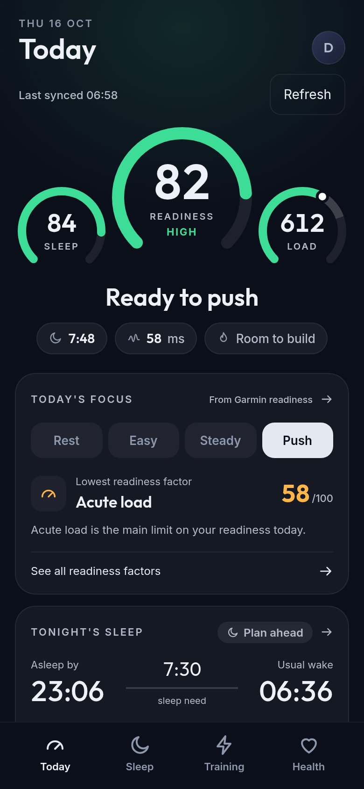
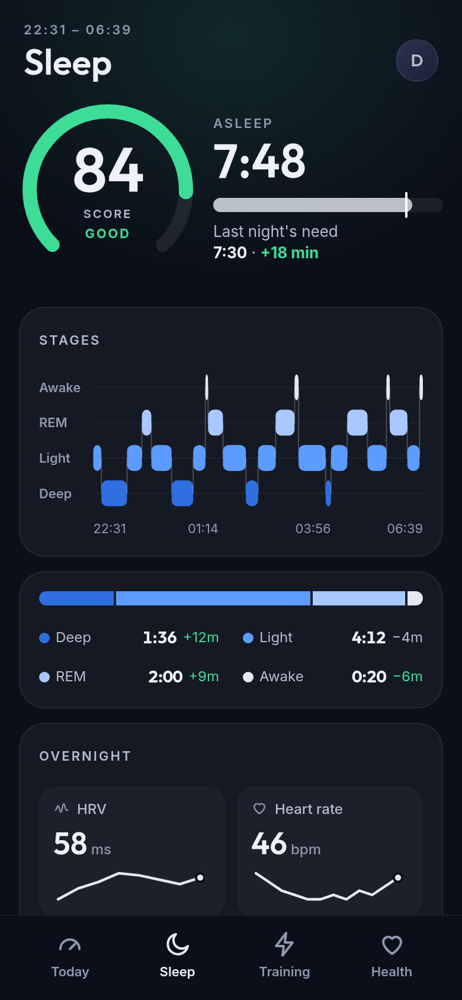
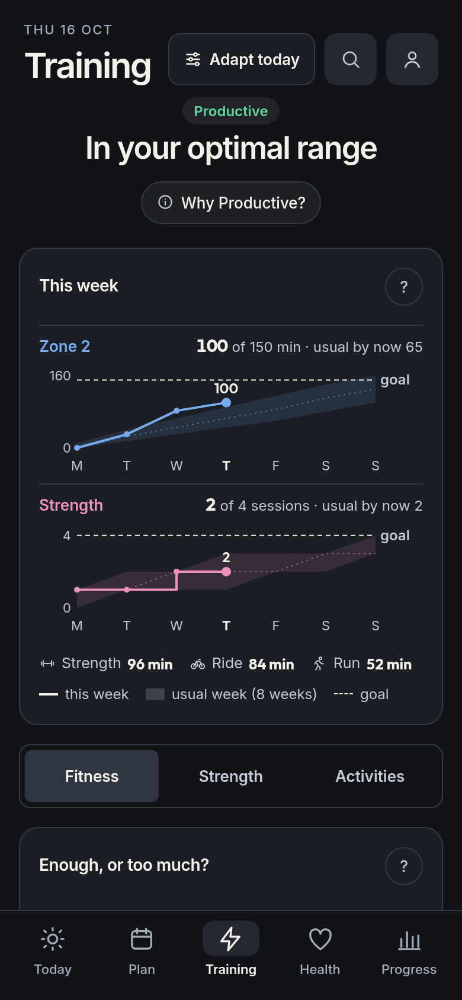
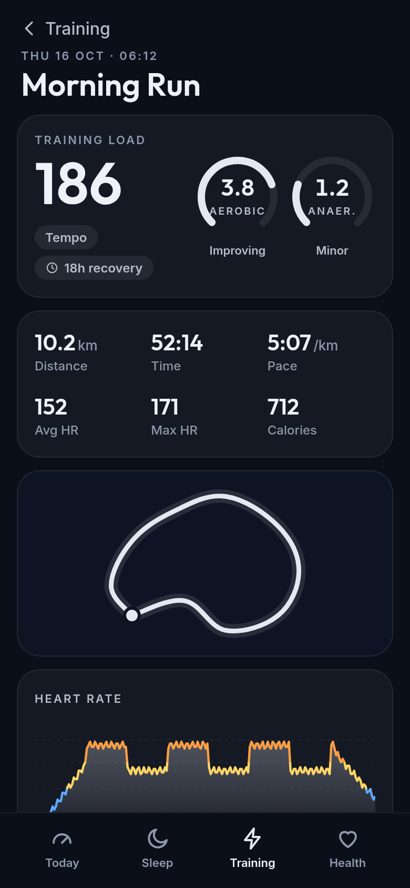
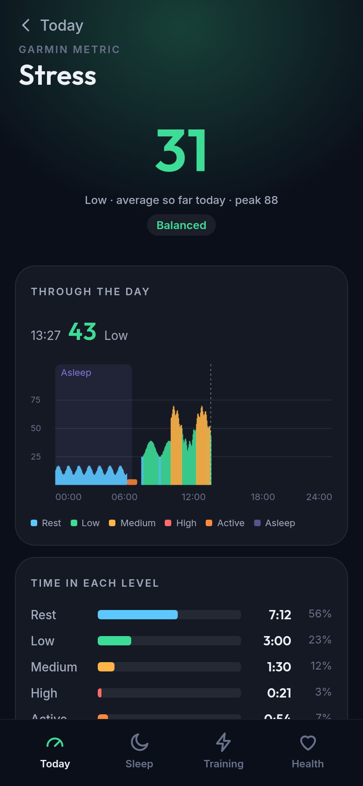
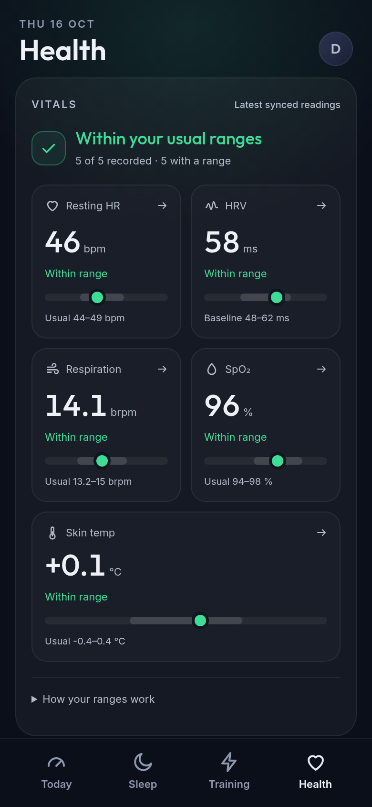

Android · Early release
A clearer view
of your day.
Your Garmin readiness, sleep, stress and workouts, at a glance. See how you’re doing, what’s behind it, and when to take it easy.
Free to use. No subscription.
Open source. No ads. No telemetry.
- ReadinessFind today’s pace
- SleepSee your recovery
- TrainingBalance your load
- StressSpot busy stretches

What you get
Everything your watch measures, made clear.
Raring shows Garmin’s own metrics, compares them with your usual ranges and turns them into a simple call for the day.
Readiness
Garmin’s Training Readiness with a daily focus—rest, easy, steady or push—and the factor holding you back.
Sleep
Stages, overnight HRV and heart rate, a 14-night consistency chart and a suggested asleep-by time for tonight.
Training
Acute load against Garmin’s optimal range, load focus gaps, recovery time, VO₂ max and race predictions.
Workouts
Training Effect, route map, heart rate by zone, time in zones and splits for each activity.
Stress
Garmin’s stress through the day with sleep and activity marked, time in each level and your 30-day trend.
Health
Resting heart rate, HRV, respiration, SpO₂ and skin temperature against your own ranges, plus Fitness Age.
Plus a weekly check-in every Monday, and optional phone notifications for morning readiness, bedtime and vitals outside your usual range.
Sleep
See how last night set you up.
Garmin’s sleep score and stages, set against the sleep you need and your usual nights, with a plan for getting enough tonight.
- Time asleep against Garmin’s sleep need
- Stage timeline, with each stage against your usual
- Overnight HRV, heart rate, respiration and SpO₂
- A 14-night consistency chart and an asleep-by time for tonight

Training
Train enough, not too much.
See the load from your last seven days against Garmin’s optimal range, and which kinds of effort you’ve been short on.
- Training status, load ratio and recovery time
- Daily load through the week
- Low aerobic, high aerobic and anaerobic focus, with shortages flagged
- VO₂ max, race predictions, endurance and hill scores

Workouts
Know what each workout did.
Open any activity to see the load it added, what it trained and how long Garmin suggests you recover.
- Aerobic and anaerobic Training Effect
- Route map and heart rate colored by zone
- Time in zones and splits, fastest highlighted
- Power and cadence when your watch records them

Stress
See what your day asked of you.
Follow Garmin’s stress readings from midnight to now, with sleep and workouts marked, so a busy afternoon stands out from a hard run.
- Today’s average, peak and level at a glance
- Time spent at rest, low, medium and high
- Daily averages over 7 and 30 days
- Body Battery and its overnight charge on Today

Health
Notice when something’s off.
Each overnight reading sits against your own usual range, built from your recent nights, so an unusual one stands out before you feel it.
- Resting heart rate, HRV, respiration, SpO₂ and skin temperature
- 7- and 30-night history for each reading
- A heads-up when two or more are outside your usual range
- Fitness Age and the change that would lower it most

The connection, explained
Keep Garmin Connect in the loop.
Raring connects to your Garmin account, not directly to your watch. It gives the data already in Garmin a different view.
Sync your watch
Keep Garmin Connect installed and let it sync your watch with Garmin. Raring can only show data that has reached your account.
Sign in with Garmin
Use Garmin’s own sign-in page inside Raring. There’s no new Raring account, and Raring doesn’t read or store your Garmin password.
See your day clearly
Raring downloads your data to your phone and checks for updates in the background. The first sync can take several minutes. Your last synced view is available offline.
Some watches also upload over Wi-Fi or through Garmin Express. What matters is that your data reaches Garmin first. Metrics vary by watch; Raring doesn’t invent missing scores.
Private by design
Your phone. Your data.
The app talks directly to Garmin. Your downloaded history stays on your phone—not on a Raring server. We don’t collect your health data or track how you use the app.
Read the privacy details- No analytics or telemetry
- No ads or tracking SDKs
- No separate Raring account
- Open source, so you can check
Ready when you are
Get Raring. It’s free.
This is an early release for Android 7 or later on arm64 phones. You’ll need a Garmin account with synced watch data. Raring isn’t in the app stores.
Open the latest release